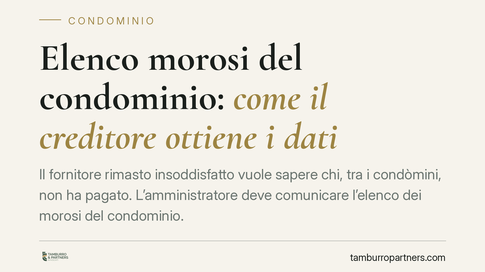

Elenco morosi del condominio: come il creditore ottiene i dati
Il fornitore rimasto insoddisfatto vuole sapere chi, tra i condòmini, non ha pagato. L'amministratore deve comunicare l'elenco dei morosi del condominio. Ma con quali strumenti il creditore può pretenderlo? Una pronuncia del Tribunale di Napoli esclude il ricorso d'urgenza per il danno meramente patrimoniale, riaprendo il tema del fondamento di quel diritto e dei suoi limiti.

Il punto: chi deve consegnare l'elenco morosi del condominio
Quando un fornitore o appaltatore resta creditore del condominio, la riscossione non è automatica. La legge gli consente di aggredire i singoli condòmini, ma per farlo deve sapere chi non ha versato la propria quota. Nasce qui la richiesta dell'elenco dei morosi del condominio, che l'amministratore detiene e che il creditore pretende.
Secondo quanto riferito, il Tribunale di Napoli si è pronunciato sul tema negando l'accesso al ricorso d'urgenza. Segnaliamo con trasparenza che gli estremi completi della decisione (sezione, numero e data) non risultano a noi verificabili: trattiamo quindi il principio in termini generali, senza attribuire alla singola pronuncia valore consolidato.
Inquadramento normativo: l'art. 63, comma 2, disp. att. cod. civ.
La norma di riferimento è l'art. 63, comma 2, delle disposizioni di attuazione del codice civile. Dispone che i creditori del condominio non possono agire contro i condòmini in regola con i pagamenti se non dopo aver escusso gli altri condòmini. È il cosiddetto beneficium excussionis: prima si aggrediscono i morosi, solo in caso di incapienza si passa a chi ha pagato.
Questa regola presuppone, logicamente, che il creditore conosca l'identità dei morosi. Da qui si ricava il suo interesse a ottenere l'elenco. Attenzione però alla qualificazione: l'art. 63 attribuisce al creditore un diritto di escussione selettiva; non contiene, di per sé, un espresso obbligo informativo dell'amministratore sanzionato in via risarcitoria. L'eventuale responsabilità per il rifiuto va fondata altrove.
Il fondamento dell'obbligo informativo: una distinzione necessaria
Occorre tenere separati due piani.
Il primo è il diritto sostanziale del creditore a sapere chi deve pagare, funzionale all'escussione preventiva ex art. 63, comma 2.
Il secondo è la fonte della responsabilità nel caso in cui l'amministratore rifiuti di collaborare. Qui l'inquadramento è dibattuto. Una lettura riconduce l'eventuale danno alla responsabilità extracontrattuale ex art. 2043 cod. civ., ipotizzando un illecito dell'amministratore come persona fisica. È un orientamento non pacifico: non si tratta di una strada necessitata, ma di una ricostruzione che va provata caso per caso, dimostrando condotta, danno e nesso causale. Presentarla come soluzione automatica sarebbe scorretto.
Perché cade il ricorso d'urgenza ex art. 700 c.p.c.
Il creditore è tentato dalla via rapida: il ricorso d'urgenza ex art. 700 cod. proc. civ.. Questo strumento richiede due presupposti: il *fumus boni iuris* (la verosimiglianza del diritto) e il *periculum in mora* (un pregiudizio imminente e irreparabile nel tempo del giudizio ordinario).
Il nodo è proprio il periculum. Quando il pregiudizio lamentato è meramente patrimoniale — cioè consiste nel ritardo a riscuotere una somma di denaro — manca di regola il carattere dell'irreparabilità. Il danno patrimoniale, per sua natura, è risarcibile per equivalente: si traduce in denaro e può essere ristorato alla fine. Per questo il ricorso d'urgenza tende a essere dichiarato inammissibile, e il creditore è reindirizzato verso la cognizione ordinaria.
Implicazioni pratiche per i due destinatari
Per il creditore del condominio: la pretesa sull'elenco morosi è legittima, ma lo strumento conta. La scorciatoia del 700 c.p.c. rischia di essere respinta. L'elenco va richiesto in prima battuta in via stragiudiziale e documentata, costruendo poi, se necessario, un'azione di merito.
Per l'amministratore di condominio: la comunicazione dei dati dei morosi va gestita con equilibrio. Da un lato c'è l'interesse del creditore; dall'altro la normativa privacy (Reg. UE 2016/679). I dati vanno comunicati nei limiti dello stretto necessario all'esercizio del diritto di credito, evitando diffusioni ulteriori o indiscriminate. Un rifiuto immotivato espone a contestazioni; una comunicazione sovrabbondante espone a contestazioni opposte.
Cosa fare in concreto
- Formalizzare la richiesta: il creditore inoltri domanda scritta e documentata del credito, così da datare la richiesta e l'eventuale inerzia dell'amministratore.
- Verificare i presupposti del danno irreparabile prima di ipotizzare un ricorso d'urgenza: per il solo ritardo nel pagamento il periculum tende a mancare.
- Circoscrivere i dati comunicati: l'amministratore trasmetta le sole informazioni necessarie all'escussione, nel rispetto del principio di minimizzazione.
- Documentare ogni passaggio: richieste, solleciti e risposte costituiscono la base probatoria di qualunque azione successiva.
- Distinguere i piani: tenere separato il diritto all'escussione ex art. 63 dal profilo risarcitorio, che richiede prova autonoma del danno.
Contributo informativo a cura di Tamburro & Partners Avvocati. Non costituisce parere legale.
Ogni condominio ha una storia a sé.
Se gestisci un'amministrazione e vuoi un confronto su una specifica questione condominiale, scrivi allo studio. Ti rispondiamo entro un giorno lavorativo.